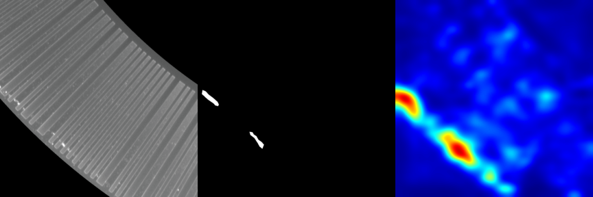

Tại MediaX, chúng tôi liên tục thử nghiệm các mô hình AI có thể mở rộng và khái quát hóa. Một trong những nỗ lực nghiên cứu mới nhất của chúng tôi liên quan đến việc tận dụngTHỦY TINHkhuôn khổ—Phân đoạn bất thường cục bộ có thể tổng quát hóa—để phát hiện và phân đoạn các điểm bất thường về hình ảnh trong tập dữ liệu hình ảnh. Đánh giá của chúng tôi cho thấy hiệu suất đầy hứa hẹn cho các ứng dụng trong thế giới thực.
Khung
THỦY TINHlà một mô hình học sâu tiên tiến được thiết kế riêng cho phân khúc bất thường. Nó kết hợp kiến trúc dựa trên bộ mã hóa mạnh mẽ với tính năng học tập tính năng cục bộ để phát hiện các khiếm khuyết và điểm bất thường tinh vi trong nền phức tạp.
Chúng tôi đã đào tạo mô hình trên nội bộ của mìnhBộ dữ liệu bộ mã hóa MediaX, sử dụng Colab và tập lệnh shell tùy chỉnh để thực thi và xuất kết quả. Việc đào tạo và đánh giá mô hình được thực hiện bằng cách sử dụng trình chạy gốc của GLASS, được tích hợp với đường dẫn dữ liệu tùy chỉnh của chúng tôi.
Điểm nổi bật về hiệu suất
Phát hiện mức hình ảnh
- AUROC: 100.0
- Độ chính xác trung bình (AP): 100.0
Điều này cho thấy sự phân loại hoàn hảo giữa hình ảnh bình thường và hình ảnh bất thường.
Bản địa hóa cấp pixel
- AUROC: 96.99
- Độ chính xác trung bình: 19.19
- PRO (Chồng chéo theo vùng): 95.03
Mặc dù mô hình định vị các vùng bất thường rất hiệu quả (AUROC/PRO cao), AP thấp hơn cho thấy độ nhạy nhiễu nhẹ hoặc phân đoạn quá mức—một lĩnh vực chúng tôi đang tích cực cải thiện.
Tác động và các bước tiếp theo
Nghiên cứu này xác nhận tính hiệu quả củaTHỦY TINHđể kiểm tra trực quan cấp ngành. Chúng tôi mong muốn tối ưu hóa hơn nữa độ chính xác ở cấp độ pixel và áp dụng khuôn khổ trên các ngành dọc rộng hơn như sản xuất, hậu cần và giám sát thông minh.
Để theo dõi nghiên cứu AI mới nhất của chúng tôi, hãy truy cậpTrang nghiên cứu MediaX.